Clinical Approach to the Muscles of the Shoulder
- Pectoralis major adducts, flexes and medially rotates the arm (think chest press). Pectoralis minor (ribs 3–5 → coracoid) steadies the scapula against the chest wall. For this course both pecs get both pectoral nerves.
- Serratus anterior (long thoracic, C5–7) protracts the scapula and holds its medial border against the chest wall. Lose it and the scapula wings when the patient pushes.
- Deltoid (axillary, C5–6): anterior fibres flex and medially rotate, middle abduct, posterior extend and laterally rotate. Supraspinatus does the first 15° of abduction; the deltoid does the rest.
- Rotator cuff: supraspinatus, infraspinatus and teres minor go to the greater tubercle; subscapularis to the lesser. Its main job is keeping the humeral head centred; moving the arm is secondary. Teres major is not cuff.
- Rotator cuff disease is the most common shoulder disorder: it starts in the 40s and is mostly intrinsic tendon degeneration. Active < passive motion, positive impingement signs (Neer, Hawkins, painful arc). Stages: inflamed → partial → full thickness → cuff arthropathy.
- Most patients never need surgery. Education, activity changes, NSAIDs and physiotherapy (the mainstay) first. Repair is for persistent pain, weakness or an acute tear; cuff arthropathy gets a reverse shoulder arthroplasty.
Learning Objectives
- Identify the major muscles of the upper extremity (shoulder girdle, brachium, the forearm muscles from the medial and lateral epicondyles, the hand) as they pertain to clinical presentations.
- Create a differential and management plan for upper extremity complaints: numbness, weakness, pain and loss of range of motion.
- Describe the anatomic basis of common shoulder pathology: AC separation, rotator cuff disease, biceps tendinopathy, arthritis, instability and adhesive capsulitis.
- Outline an approach to diagnosis and management (non-pharmacologic, pharmacologic and surgical) for these conditions.
Dr. Charys Martin (anatomy) and Dr. Ken Faber (orthopaedic surgery, Roth McFarlane Hand & Upper Limb Centre), 67 minutes: a superficial-back review quiz, the pectoral and shoulder muscles, and rotator cuff disease with a repair video. The objectives are shared across several modules; the rest are taught in the arm, distal limb and hand modules, the labs and Clinical Skills. This module and Brachial Plexus are the prep for Tuesday's Proximal Upper Extremity Part I lab.
The Muscles
Dr. Martin's two recordings and their knowledge checks.
Quick Review: the Superficial Back
Trapezius, latissimus dorsi, the rhomboids and levator scapulae act on the girdle from behind (they're on the Week 7 back page). The review quiz's two points: retracting the scapula is the rhomboids and the middle fibres of trapezius; reaching behind to scratch your back (arm medially rotated) uses latissimus dorsi, levator scapulae and the rhomboids.
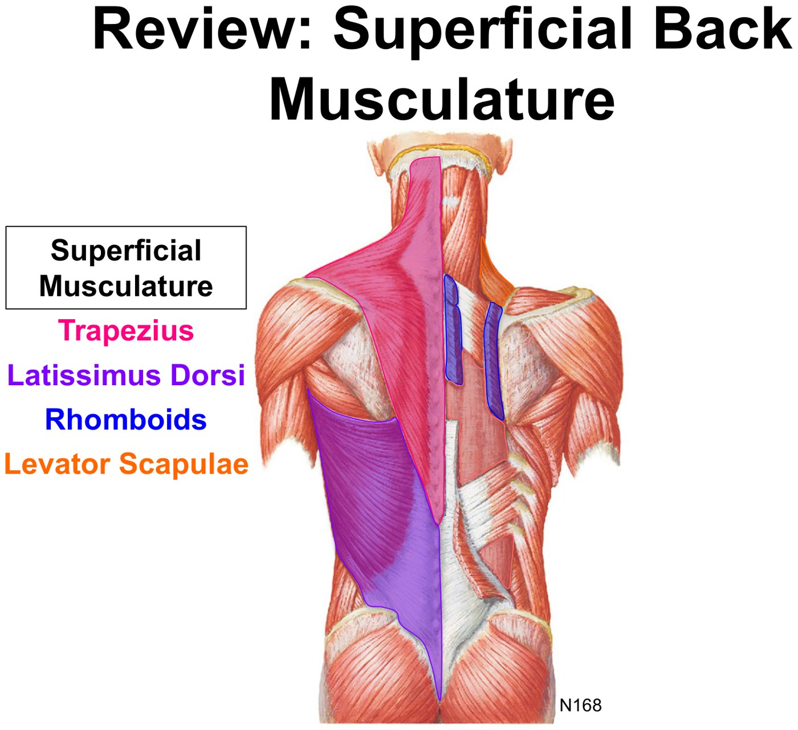
The Pectoral Region
Every muscle has an antagonist doing the opposite action, and the shoulder needs both: its bony and ligamentous stability is poor, so it relies on muscles to hold it.
| Muscle | Origin | Insertion | Nerve | Action |
|---|---|---|---|---|
| Pectoralis major | Medial clavicle, sternum, upper 6 ribs and costal cartilages | Lateral lip of the intertubercular groove | Medial + lateral pectoral | Adducts, flexes, medially rotates the humerus |
| Pectoralis minor | Ribs 3–5 | Coracoid process | Medial + lateral pectoral | Stabilizes the scapula by drawing it anteriorly and inferiorly against the chest wall |
| Serratus anterior | Ribs 1–8 (the finger-like slips) | Medial border of the scapula (it wraps round between the chest wall and the scapula) | Long thoracic (C5, 6, 7) | Protracts the scapula (all reaching and pushing; “the boxer's muscle”), holds it against the chest wall, helps rotate it |
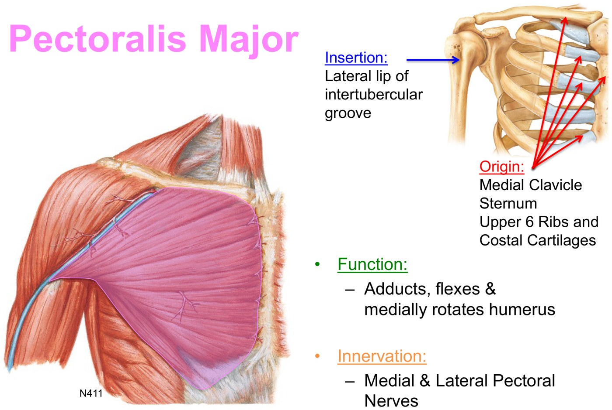
Pectoralis major. Slide from the deck.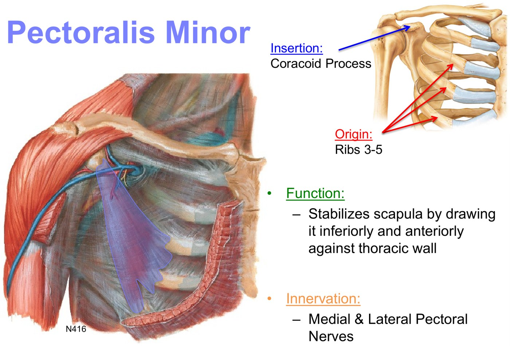
Pectoralis minor. Slide from the deck.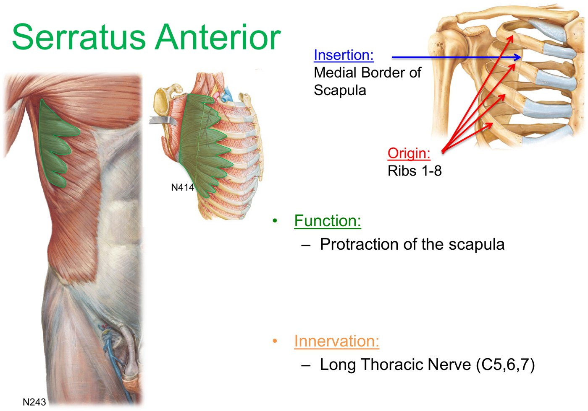
Serratus anterior. Slide from the deck.Injure the long thoracic nerve (it runs down the lateral chest wall on serratus anterior) and serratus can no longer hold the scapula's medial border flat. Push along the long axis of the arm, against a wall, and the medial border lifts off the chest: a winged scapula. It points to the long thoracic nerve or the muscle itself. (The slide's photograph of a winged scapula is described, not shown.)
Pectoral nerves: some textbooks give pec minor the medial pectoral nerve only. For this course, both pecs get both nerves: a communicating branch joins the two after they leave the plexus.
The Shoulder Muscles
These are true upper-limb muscles: none attaches to the axial skeleton.
| Muscle | Origin | Insertion | Nerve | Action |
|---|---|---|---|---|
| Deltoid | Lateral ⅓ of the clavicle, acromion, spine of the scapula (a U over the shoulder) | Deltoid tuberosity | Axillary (C5, 6) | Anterior: flexes + medially rotates Middle: abducts Posterior: extends + laterally rotates |
| Rotator cuff (SITS) | ||||
| Supraspinatus | Supraspinous fossa | Greater tubercle (highest) | Suprascapular (C5, 6) | First 15° of abduction; stabilizes the GH joint |
| Infraspinatus | Infraspinous fossa | Greater tubercle (middle) | Suprascapular (C5, 6) | Lateral rotation; stabilizes |
| Teres minor (smallest) | Lateral border of the scapula | Greater tubercle (lowest) | Axillary (C5, 6) | Lateral rotation; stabilizes |
| Subscapularis | Subscapular fossa (anterior) | Lesser tubercle | Upper + lower subscapular | Medial rotation; stabilizes |
| Not cuff | ||||
| Teres major | Inferior angle of the scapula | Medial lip of the intertubercular groove (next to latissimus) | Lower subscapular (C5, 6) | Adducts and medially rotates (with latissimus dorsi) |
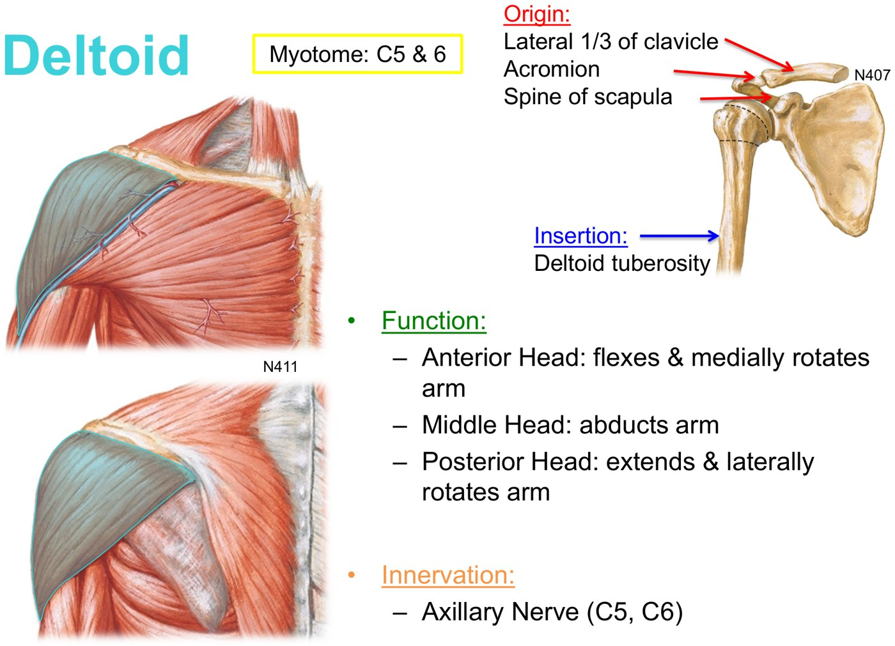
Deltoid. Slide from the deck.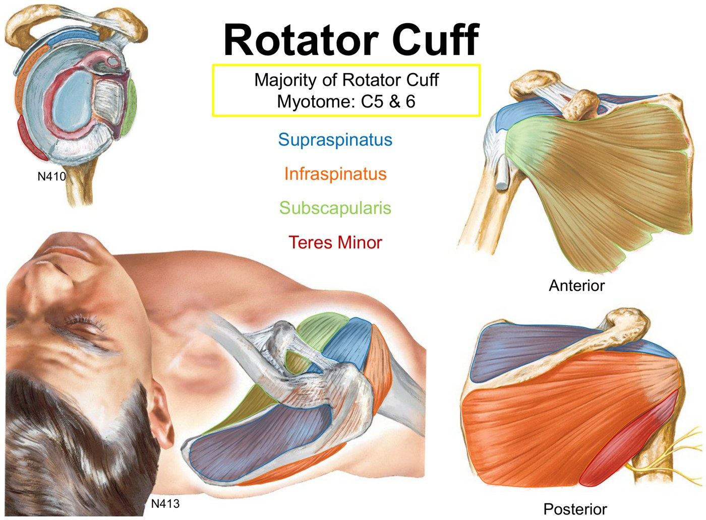
The cuff wraps the GH joint capsule and holds the head in the glenoid. Slide from the deck.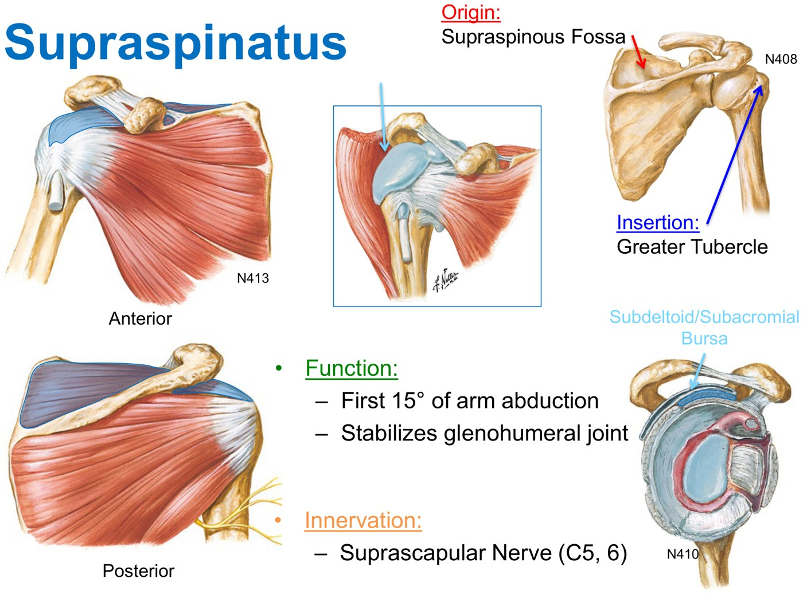
Supraspinatus, with the subacromial/subdeltoid bursa above its tendon. Slide from the deck.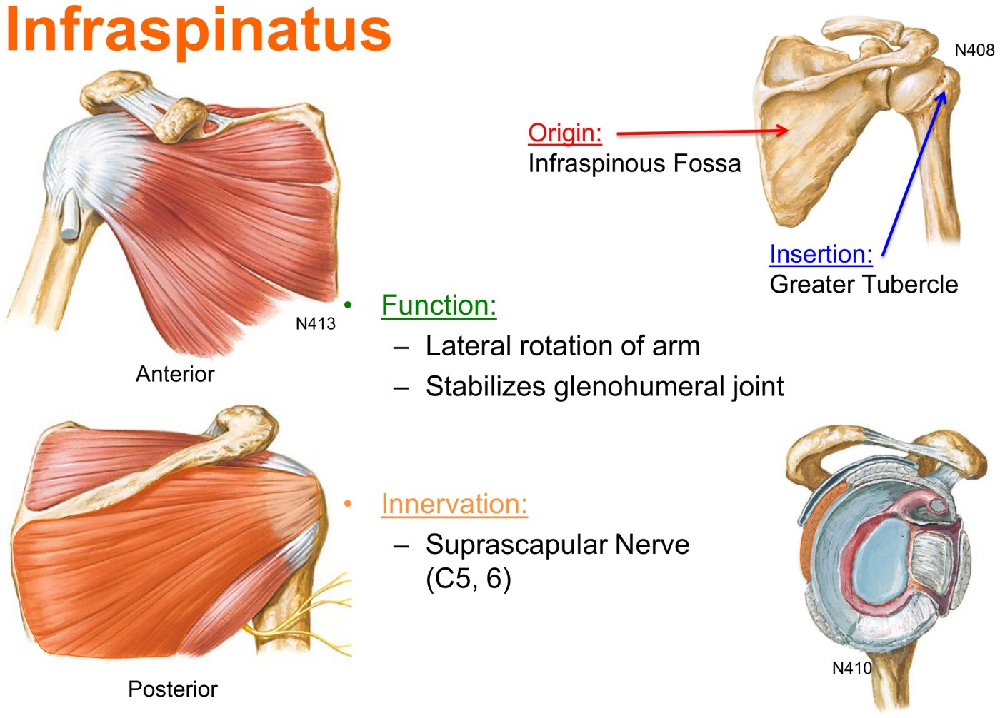
Infraspinatus. Slide from the deck.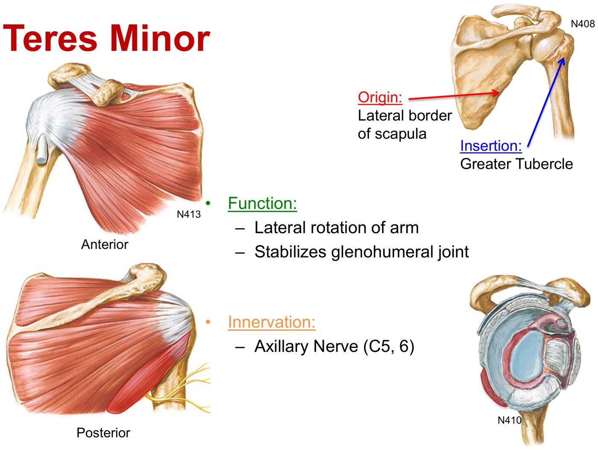
Teres minor. Slide from the deck.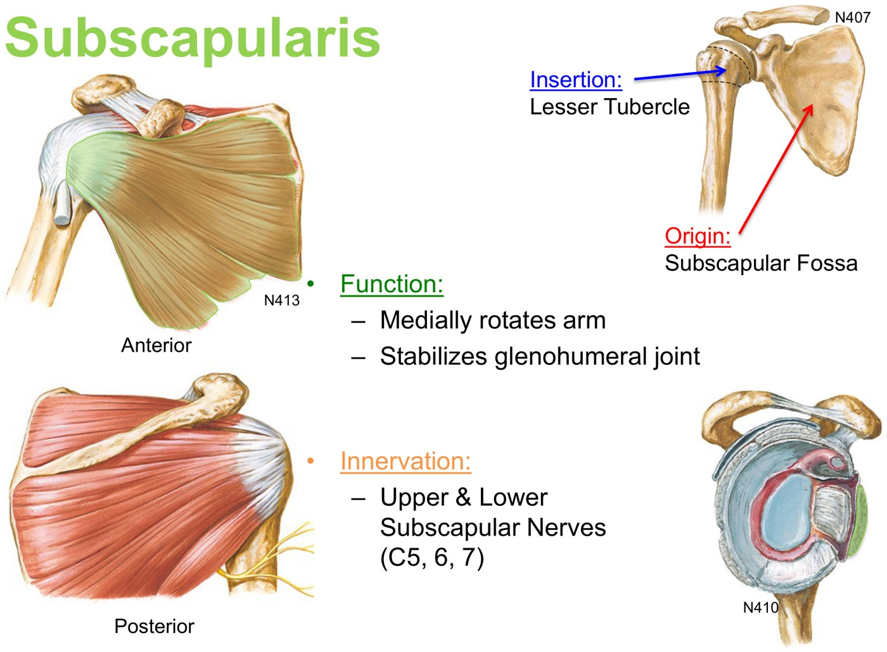
Subscapularis. Slide from the deck.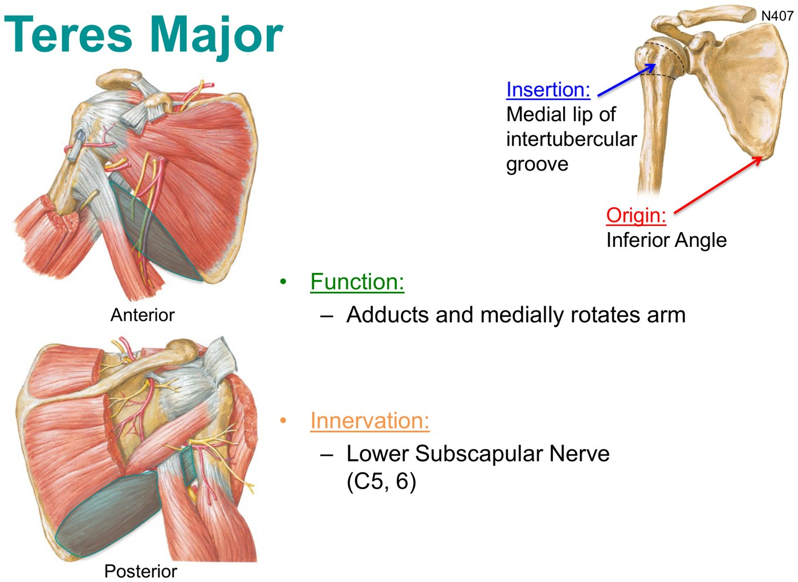
Teres major. Slide from the deck.It's the most commonly torn cuff tendon, usually from repetitive overhead sport or work: there is little room between its tendon and the acromion, and the subacromial/subdeltoid bursa (one continuous bursa) sits on top and can inflame too. Rotator cuff tendinitis is the most common cause of shoulder pain, and like subacromial bursitis it hurts in mid-abduction (Dr. Martin: about 40–120°), the painful arc.
The suprascapular nerve's route explains why one nerve supplies two fossae: superior trunk → suprascapular notch → supraspinous fossa (supraspinatus) → round the spinoglenoid notch, between the scapular spine and the glenoid → infraspinous fossa (infraspinatus).
Knowledge checks
Lateral rotation uses the posterior deltoid, infraspinatus and teres minor. (The module's feedback says anterior deltoid; the slide and the recording both give lateral rotation to the posterior fibres.) The three cadaver labelling exercises (the superficial back, the pectoral muscles' actions, and nine back and shoulder muscles) are photographs, so they're left out.
Rotator Cuff Disease
Dr. Faber's recording and a rotator cuff repair video.
Function and Pathophysiology
Rotator cuff disease is the most common shoulder disorder in practice. It starts in the 40s, becomes more common with age, and is considered progressive.
Function: the cuff's primary job is to stabilize the shoulder, keeping the humeral head centred in the glenoid against the pull of the big movers (deltoid, pectoralis major, latissimus dorsi). Moving the arm is its secondary job.
| Intrinsic (the tendon itself) | Extrinsic (something outside the tendon) | |
|---|---|---|
| What | Vascularity: capillaries in the tendon thin out with age, starting on the articular side, so it heals poorly Tension overload: repetitive reaching work, strain after strain Degeneration: more collagen cross-linking and less water make it brittle | Acromion morphology and a small subacromial space: the undersurface of the acromion abrades the cuff |
| How common | The usual cause | Once thought the main cause; now probably exceptional |
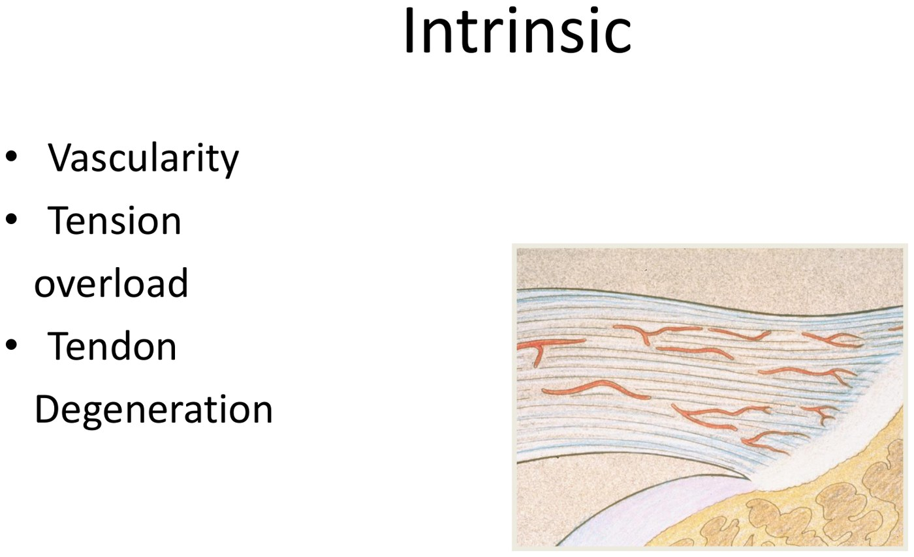
Intrinsic causes. Slide from the deck.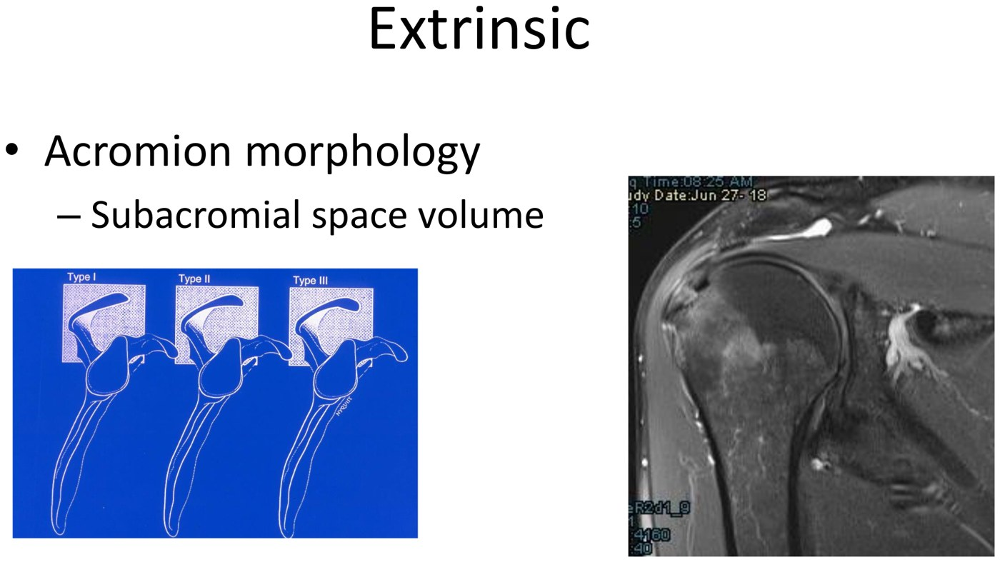
Extrinsic: acromion shape and subacromial space. Slide from the deck.If the acromion were grinding the cuff from outside, tears would start on the bursal side and work inward. They don't: cuff disease usually starts on the articular side (against the humerus) and propagates outward. That fits an intrinsic, tendon-level process.
Symptoms and Examination
Symptoms: restricted motion (because it hurts), pain, and weakness (from pain, or because the tendon is no longer attached to bone).
| Exam | What you do → what it means |
|---|---|
| Move | Active < passive motion: contracting the cuff hurts, but the examiner can lift the arm further |
| Neer sign | The examiner lifts the arm, driving the cuff against the anterior acromion → pain |
| Hawkins test | The arm is forced into internal rotation, bumping a different part of the cuff against the acromion → pain |
| Painful arc | Raising the arm out to the side (“snow angel”) hurts through mid-range; the patient hikes the shoulder to get through it, and higher up the pain goes away |
| Strength tests | Supraspinatus and infraspinatus tested side to side; subscapularis: hand on the small of the back, can they lift it off? |
The exam slides are photographs of examiners and patients, so they're described rather than shown. The full techniques come in Clinical Methods.
Classification and Treatment
| Stage | Pathology | Surgery, if non-operative care fails |
|---|---|---|
| I | Inflammation: cuff intact, x-ray normal, red shaggy synovitis at arthroscopy | Physio; rarely subacromial decompression (acromioplasty), only if true acromial abrasion is suspected |
| II | Partial-thickness defect, usually on the articular surface | Consider repair: convert it to full thickness, then reattach to bone |
| III | Full-thickness defect: the head can ride up; on MRI, joint fluid escapes through the hole | Rotator cuff repair |
| Cuff arthropathy | Massive defect: the deltoid pulls the humerus up against the acromion (the 1 cm gap falls to ~1 mm), and arthritis follows | Reverse shoulder arthroplasty |
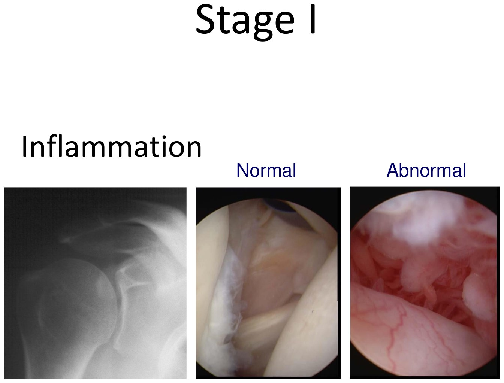
Stage I: normal x-ray; inflamed (right) vs normal arthroscopy. Slide from the deck.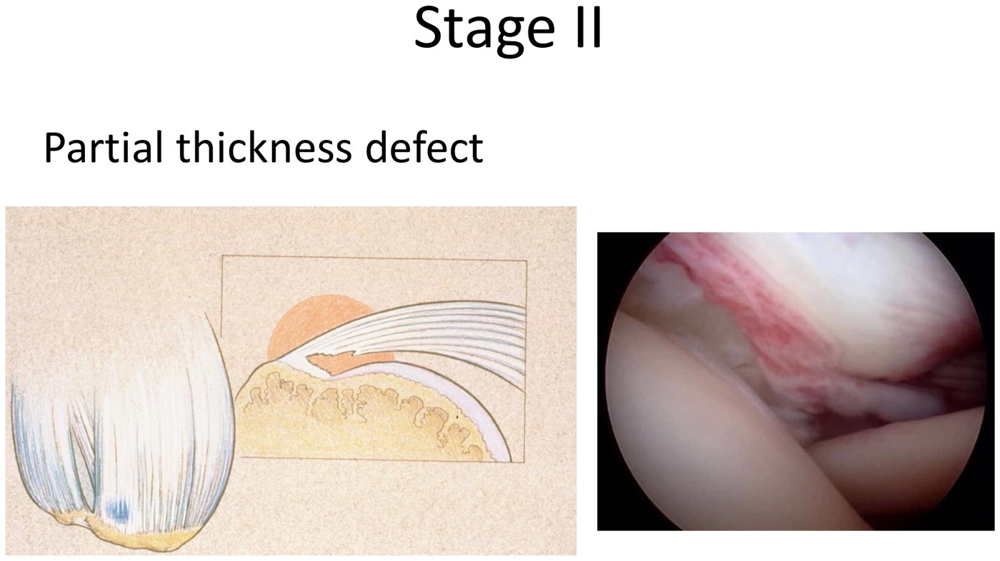
Stage II: partial thickness, articular side. Slide from the deck.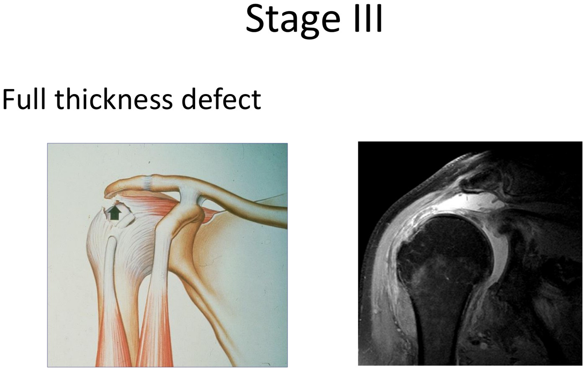
Stage III: full thickness. Slide from the deck.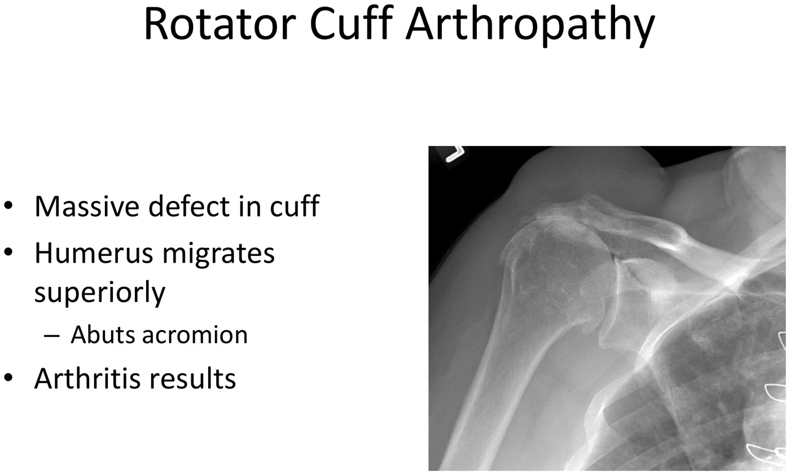
Cuff arthropathy: a high-riding head. Slide from the deck.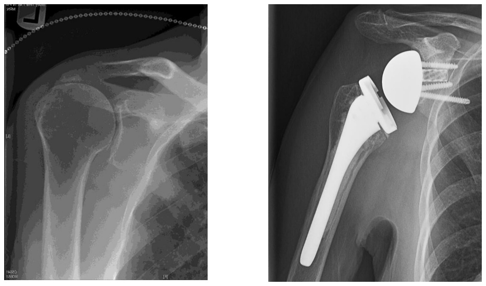
Explain the problem and what to expect.
Avoid what makes it sore.
NSAIDs such as ibuprofen ± acetaminophen; stay away from narcotics.
Even with a significant defect. Recondition the undamaged muscles so they compensate, recentre the head and let the damaged area heal.
Local anaesthetic and steroid can wear the tissue down further, so they're mainly for people who will never be surgical candidates.
For persistent pain, weakness, or an acute injury: e.g. someone in their 40s with a previously normal shoulder who dislocates it may have a true acute tear worth repairing early. Everyone else must fail non-operative care first.
“Good surgeons know how to operate. Better surgeons know when to operate. The best surgeons know when not to operate.” Many patients get better without surgery.
The repair video, in words
Arthroscopic: the camera looks through the full-thickness tear from the bursal side into the joint (biceps tendon visible). The torn edge is grasped to check it reduces to the greater tuberosity, a suture anchor (screw) goes into the bone, its sutures are passed through the cuff, and knots tied outside are pushed down to pull the tendon back onto bone.
Knowledge check: which is not an intrinsic contributor? → acromion shape. It presses on the tendon from outside; vascularity, degradation and tension overload are all intrinsic.
Built from Dr. Charys Martin and Dr. Ken Faber's “Clinical Approach to the Muscles of the Shoulder” module: four recordings (pectoral muscles, shoulder muscles, rotator cuff disease, the cuff repair), its review quiz and knowledge checks, the 45-slide detailed deck and Dr. Martin's anatomy notes. Left out and described in text: the cadaver knowledge checks, the winged-scapula photograph, the examination photographs, the pitcher and the reverse-arthroplasty patient. Discrepancies flagged: the anatomy notes say teres major abducts; the slide and the recording say it adducts, which is followed. The subscapular nerves are listed as C5, 6, 7 here but C5, 6 in the Brachial Plexus deck. Pec minor's innervation is given as both pectoral nerves by course convention. The lateral-rotation knowledge check's feedback credits the anterior deltoid; the slide and recording say posterior, which is followed. Caption corrections: intertubercular (“inter to vehicular”), innervation (“innovation”), serratus anterior (“Sarita”, “Santeria”), teres (“Tyrese”), subacromial (“seven chromium”, “sub, a chronic”), supraspinous and suprascapular (“super spinous”, “super scapular”), the spinoglenoid notch (“great scapula or not”), supraspinatus (“super sonata”, “super skinny”), greater and lesser tuberosity (“greater tuber acetate”, “crater to porosity”, “less fracture voracity”), humeral head (“human head”), vascularity (“vast polarity”), bursal (“Birsel”, “personal”), Neer (“near”), synovitis (“spinal virus”), arthroscopic (“neutrophil, a pitcher”), cuff arthropathy (“arthroplasty”), acromioplasty (“acronym NEOPLASTIC”) and cuff disease (“back courtesies”).